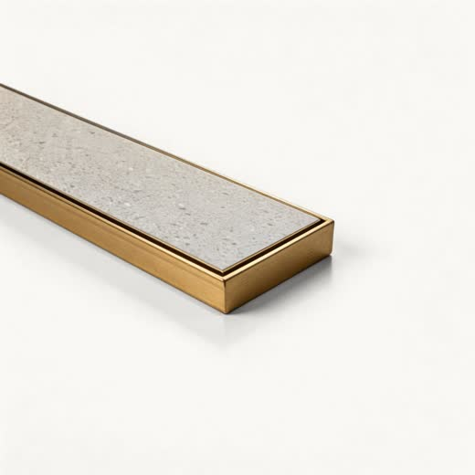
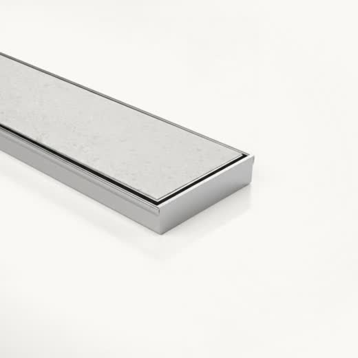
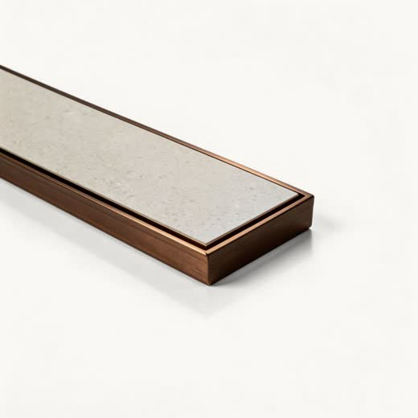
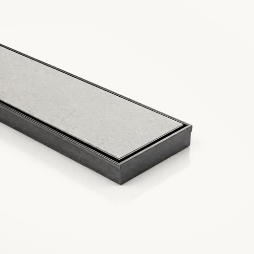
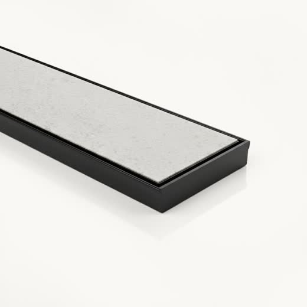
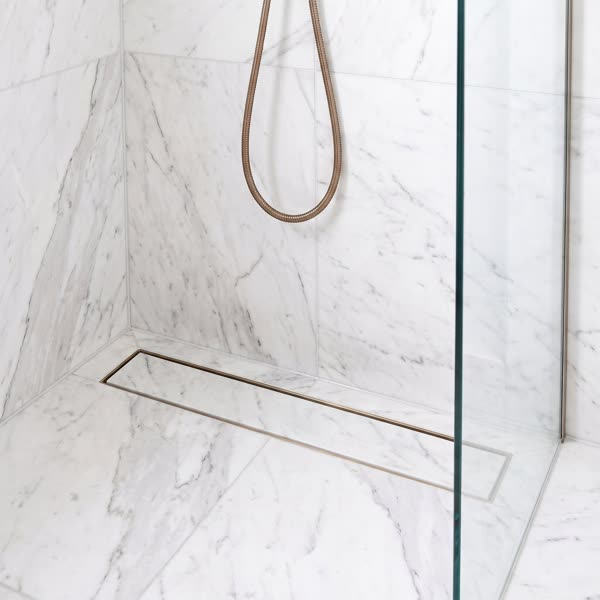

Storyboard v2 · for review before build
Neston: All of the Drain, None of the Drama
A 30-second vertical reel in the style of the Bios Life "None of the Bull" ad: dry voiceover, heavy type that builds word by word, cut-out vintage imagery as punchlines, one rubber-stamp gag and whip-blur cuts. Rebuilt in Neston's palette, using Neston's real product photos and only the proof points in BRAND.md.
30 s · 10 scenes1080×1920 · 9:16 · 30 fps
VO James – Australian (house voice)Audience trade + specifiers (Phase 1)
CTA Ask your reseller
Approved exception: on-screen text allowed for this video
BRAND.md (15 Nov 2026) says Neston videos carry no on-screen text. The owner overrode that rule for this reel on 27 Nov 2026, so the kinetic type stays. The rule still applies to the regular weekly reels.
What we're taking from the reference
Textured groundTheir blue-grey grunge paper becomes a warm concrete-screed texture with a heavy vignette and a faint brass tint.
Type that buildsHuge condensed ink capitals land word by word with the VO. Size jumps carry the joke: small setup, giant payoff.
Cut-out punchlinesVintage engravings and postcards dropped in flat, with no shadows. Public-domain or licensed only, and no recognisable real people.
One stamp gagTheir red "STUPID" becomes a red "WISHFUL THINKING". It mocks the spec decision, never the viewer.
Whip-blur cutsDirectional motion blur between beats, with the product spinning out on the tagline.
Deadpan voiceFast and dry, never shouty. That also keeps us inside Neston's calm voice: no hype words, no exclamation marks.
Scenes
0:00.0 – 0:02.5
1 · Hook
You want a drain?
- On screen
- "YOU WANT" small, then "A DRAIN?" slams in huge.
- Motion
- Hard cut in from black frame 0. Each word snaps in with a slight overshoot. A slow 3% push-in holds through the scene.
- Sound
- Music kicks in on frame 1. A low thud lands on "drain".
How about an
Architectural
Drain
0:02.5 – 0:05.0
2 · The pitch
How about an architectural drain…
- On screen
- "HOW ABOUT AN" / "ARCHITECTURAL" / "DRAIN", stacked as the words are spoken.
- Motion
- Lines type on from the left with a short motion trail, like the reference's "How about smart energy".
Public-domain engraving:
Roman sewer arch
(Cloaca Maxima, 1700s etching)
Not that
kind.
0:05.0 – 0:07.0
3 · "Not that type" gag
…no. Not that kind.
- On screen
- "NOT THAT KIND." over an old engraving of a Roman sewer, since the Romans did "architectural drains" first.
- Motion
- The engraving slides up from the bottom edge as a flat cut-out. The type punches on "kind".
- Ref beat
- Bios Life's wind turbines under "Not that type".
NESTON
The
316
Stainless steel
drain

0:07.0 – 0:10.5
4 · Hero reveal
Neston. The three-sixteen stainless steel drain.
- On screen
- The NESTON wordmark runs vertically up the left edge, as Bios Life does. "THE / 316 / STAINLESS STEEL DRAIN" builds beside it.
- Visual
- Real photo: the brushed brass 1200mm tile insert kit, set into the paper like it's sitting in a screed bed.
- Motion
- The kit rises into place on "Neston". At the end, everything whips off to the right with motion blur.
- Proof point
- #1 in BRAND.md: 316 across the whole range.
Plenty of drains are
304.
Fine.
If everyone
cleans up.
Vintage cleaning illustration:
scrub brush and bucket
(PD / licensed)
0:10.5 – 0:14.0
5 · Roast the alternative
Plenty of drains are three-oh-four. Which is fine… if everyone cleans up properly.
- On screen
- A giant "304." then "FINE." then "IF EVERYONE CLEANS UP." Soap suds and a few loose hairs creep across the frame as the illustration drops in.
- Motion
- The suds spread organically over about 1 second. The illustration drops in with a little paper flutter.
- Ref beat
- "9 donuts" and "Toledo", where the joke lands on the competitor.
Claim check: no brand is named. 304 is described as fine with proper care, and 316 is not claimed to be bleach-proof or maintenance-free. The compliance reviewer signs off on this line before build.
Counting on
That
is just…
Wishful
thinking
0:14.0 – 0:17.0
6 · The stamp
Counting on that is just…
- On screen
- The line builds, then a red "WISHFUL THINKING" rubber stamp slams across it on the pause.
- Motion
- The stamp scales from 140% to 100% in 3 frames with a 2-frame camera shake. The ink texture stays grainy.
- Sound
- A stamp thunk. The music drops out for half a beat.
- Ref beat
- "Drinking anything else is just… STUPID".
We've got
Five
matched
finishes




0:17.0 – 0:21.0
7 · The brag
We've got five matched finishes. Stainless, brass, bronze, gun metal… and black.
- On screen
- "WE'VE GOT FIVE MATCHED FINISHES". Five real kit photos stack in, one on each finish name, and a swatch pops for each.
- Motion
- Kits drop in on the beat, about 0.35 s apart, with a small bounce on each.
- Proof point
- #2 in BRAND.md: five matched PVD finishes.
- Ref beat
- "We've got matcha, hand harvested…".
I'm so proud.
Vintage illustration:
1950s tradesman
with spirit level
(PD / licensed)
Cut to size
on site
0:21.0 – 0:24.5
8 · Make your plumber proud
Kits you cut to size on site. Your plumber will be so proud.
- On screen
- "CUT TO SIZE ON SITE" under a vintage tradesman illustration with an "I'm so proud." speech bubble.
- Motion
- A saw-cut wipe slices "CUT TO SIZE" in two, then it snaps back. The bubble pops on "proud".
- Proof point
- #3 in BRAND.md: cut-to-size kits with a loose outlet and end caps.
- Ref beat
- "Make your mother proud".
Use an illustration rather than a photo of a real person. The reference used Wernher von Braun, and the brief rules out recognisable people without permission.
All of the
Drain
None of the
Drama
0:24.5 – 0:27.0
9 · Tagline
All of the drain. None of the drama.
- On screen
- "ALL OF THE DRAIN" above the brass kit, "NONE OF THE DRAMA" below.
- Motion
- The kit and type lock up, hold for 1 s, then the whole group spins and whip-blurs away, exactly like the reference's "All of the energy, none of the crash".

Available through Neston resellers
neston.com.au
0:27.0 – 0:30.0
10 · End card
Neston. Ask your reseller.
- On screen
- The large Neston logo in ink on the marble wall of a walk-in shower, with the brushed bronze linear drain along the floor below it. "Available through Neston resellers · neston.com.au" sits under the logo.
- Why not black
- The reference ends on a black URL card, but the owner rejected dark blocks and grey fallback end cards, so we use the installed photo as the brief asks.
- Motion
- A slow 4% push-in toward the drain while the logo fades up.
- Sound
- The music resolves on the logo, with a clean ending.
Phase 1: no price and no "buy now". The CTA points to resellers.
Full voiceover script
You want a drain? How about an architectural drain… no. Not that kind. Neston. The three-sixteen stainless steel drain. Plenty of drains are three-oh-four. Which is fine… if everyone cleans up properly. Counting on that is just… [stamp]. We've got five matched finishes. Stainless, brass, bronze, gun metal… and black. Kits you cut to size on site. Your plumber will be so proud. All of the drain. None of the drama. Neston. Ask your reseller.
74 words in 30 s, which is fast and deadpan like the reference. If James can't hold that pace cleanly, cut scene 3's "no." and "Which is".
Brand checks
| Rule (BRAND.md) | How this storyboard handles it | Status |
|---|
| No on-screen text on videos | Overridden by the owner for this reel (27 Nov 2026). | Approved |
| Calm, technical voice; no hype or exclamation marks | The humour is dry and has no superlatives. Real numbers (316, 304, five finishes) carry the brag. | Owner taste call |
| Only listed proof points | Uses #1 (316), #2 (five PVD finishes) and #3 (cut-to-size kits). No warranty, no WaterMark claim, no flow or slip figures. | OK |
| 304 vs 316 comparison | Generic grade comparison with no competitor named. Urban-use angle. Check it against the Journal post. | Compliance review |
| Phase 1: no prices, no direct buy | The CTA is "Ask your reseller". | OK |
| Real product photos, no renders or AI product footage | All product shots come from neston.com.au. Vintage props are public-domain or licensed. | OK |
| No identifiable people without permission | Illustrations and engravings only. | OK |
| Installation by a licensed plumber | The VO already says "your plumber". The caption adds "Install by a licensed plumber". | OK |
Build plan once approved
- Compliance pass on the script and on-screen text (neston-compliance-reviewer).
- Voiceover: ElevenLabs, house voice James – Australian, read deadpan. Scenes are cued to the VO's silences.
- Music: a Runway instrumental, punchier than the usual architectural bed (about 120 BPM, driving drums and bass, with a drop-out for the stamp). Kept at least 6 dB under the voice.
- Props: source the public-domain Roman sewer engraving, cleaning illustration and tradesman illustration, and check each licence.
- Build as a HyperFrames (HTML/GSAP) composition at 1080×1920, because the current make_reel.py can't do kinetic type. Then render the MP4 and a cover frame.
- Hand-over: MP4, cover, Instagram/Facebook and LinkedIn captions, and alt text. The owner posts.
Type option: the frames use Anton for the reference's condensed punch. Montserrat ExtraBold stays closer to the Neston site but reads wider and less "shouty". Anton is my pick for this piece.